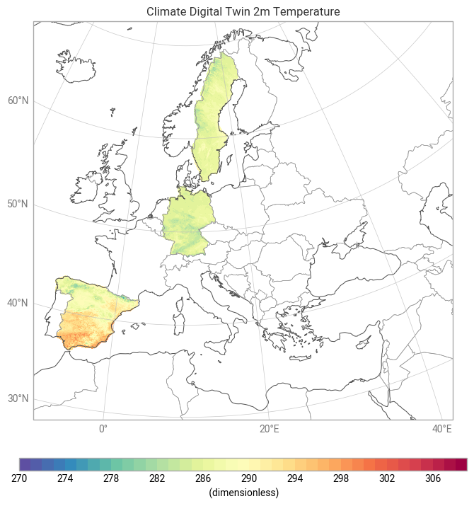

Polytope Extremes-DT Feature Extraction pcolormesh example notebook#
This notebook shows how to use earthkit-data and earthkit-plots to pull destination-earth data from LUMI and plot it using earthkit-plots and pcolormesh.
Before running the notebook you need to set up your credentials. See the main readme of this repository for different ways to do this or use the following cells to authenticate.
You will need to generate your credentials using the desp-authentication.py script.
This can be run as follows:
This will generate a token that can then be used by earthkit and polytope.
Requirements#
To run this notebook install the following:
pip install earthkit-data
pip install earthkit-plots
pip install cf-units (Optional for unit conversion in maps)
<xarray.Dataset> Size: 3MB
Dimensions: (datetimes: 1, number: 1, steps: 1, points: 59477)
Coordinates:
* datetimes (datetimes) <U20 80B '2025-09-12T00:00:00Z'
* number (number) int64 8B 0
* steps (steps) int64 8B 1
* points (points) int64 476kB 0 1 2 3 4 ... 59472 59473 59474 59475 59476
latitude (points) float64 476kB 35.98 35.98 35.98 ... 69.06 69.06 69.09
longitude (points) float64 476kB 354.5 354.5 354.6 ... 20.55 20.7 20.58
levelist (points) float64 476kB 0.0 0.0 0.0 0.0 0.0 ... 0.0 0.0 0.0 0.0
Data variables:
10u (datetimes, number, steps, points) float64 476kB -5.404 ... -2...
2t (datetimes, number, steps, points) float64 476kB 294.9 ... 284.3
Attributes:
class: d1
dataset: extremes-dt
Forecast date: 2025-09-12T00:00:00Z
expver: 0001
levtype: sfc
step: 1
stream: oper
type: fc
number: 0
date: 2025-09-12T00:00:00Z

/home/maaw/test_polytope/polytope_venv/lib/python3.11/site-packages/earthkit/plots/geo/grids.py:283: UserWarning: Interpolation produced NaN values in the global output grid, reinterpolating with `nearest`.
warnings.warn(
/home/maaw/test_polytope/polytope_venv/lib/python3.11/site-packages/earthkit/plots/geo/grids.py:283: UserWarning: Interpolation produced NaN values in the global output grid, reinterpolating with `nearest`.
warnings.warn(